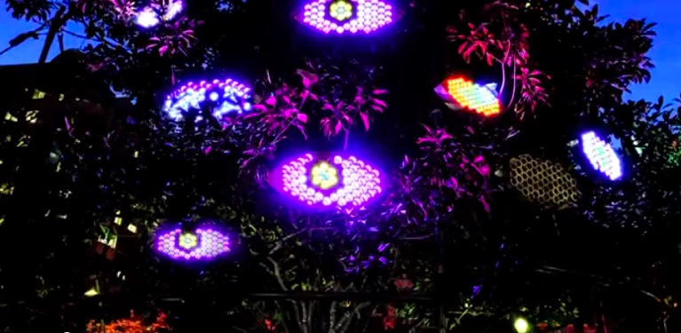

The Eyes Installation Has Ended
The Eyes were installed from late autumn to early winter 2014 in Wellburn Square in Ballston, VA.
While the Eyes were installed visitors to this page were able to interact with Eyes. When this page loaded one of the creatures that was awake would ask the visitor a question. The Grannie might ask you how you were feeling while the Flirt would live up to her name.
The visitor would then get to choose from two possible responses and the Eyes would reply back with animations. A positive response might make the Flirt flash hearts in her eyes while a rejection would bring big pixelated tears.
Thank you to everyone who visited the Eyes and helped make this project magical.